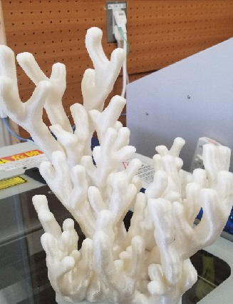

・改良に改良を重ね、修正し、さらに修正を加え、祈りを込めに込めて印刷した試作10号はついに、ついに完成しました。
・ようやくゴールが見えてきた感じです。プロトタイプは完成したのでここからようやく実物を作っていきたいと思います。

・直近の試作珊瑚を並べて記念撮影をしました。こうして並べていると意外とサンゴ礁っぽく見えます。
AUTODESKが無料提供しているソフトウェアのこと。
３Dデータを組み合わせたり、データの加工を行うためのソフトウェアです。 すでに作成してある３Dデータ同士をミックスして利用する場合などにも便利に利用できるツールです。
Meshmixerダウンロードリンク